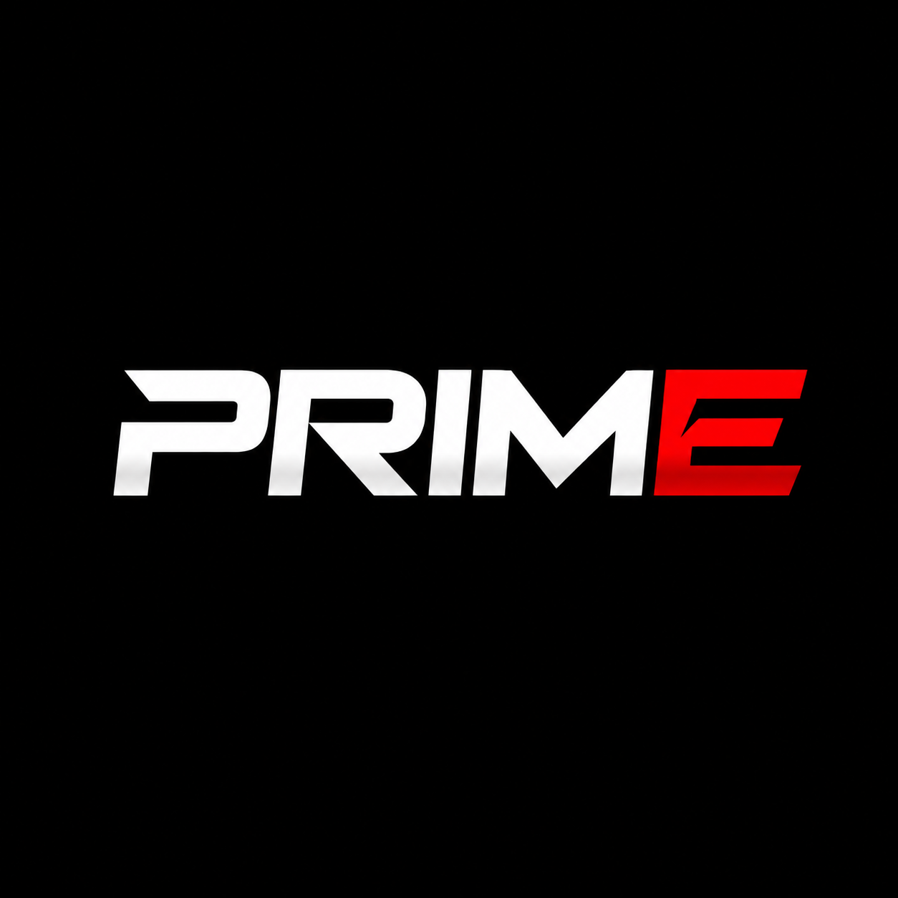
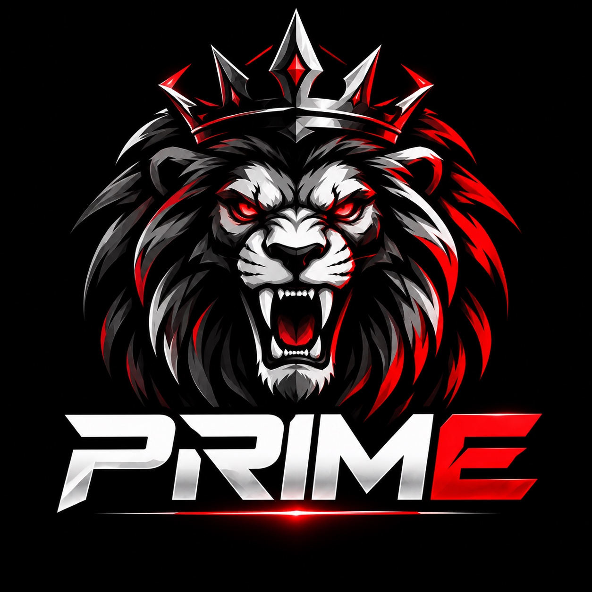

SPORTS ANALYTICS
НХЛ · ПРОГНОЗЫ PRIMEЗагрузка
—
Всего—
Ожидают—
ЗавершеныАктуальные прогнозы
Все прогнозы
NHLИстория прогнозов

PRIME
SPORTS ANALYTICS
Версия 1.6 · НХЛ
В первой версии прогнозы доступны без регистрации. Другие виды спорта добавим позже.
Источник прогнозов
Алгоритм Python-бота ICE EDGE. Приложение отображает только сохранённые прогнозы, а не создаёт новые самостоятельно.